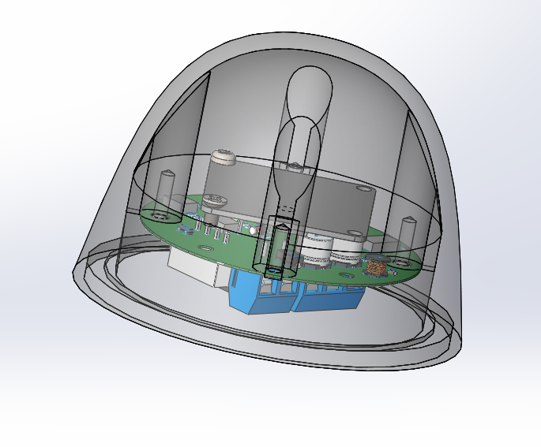

RS-21雷达雨量传感器简介¶

介绍¶
RS-21雷达雨量传感器内部采用先进的小型平板雷达模块，使用24GHZ多普勒雷达技术，通过测量不同雨滴的下落速度，分辨出雨滴的体积和雨雪冰雹等降水类型，进而利用统计密度和相关数学模型，模拟并推算出一段时间内的降雨量。
RS-21雷达雨量传感器相比传统机械式雨量桶，无需担心树叶灰尘造成的堵塞，也不用担心霜冻导致的灵敏度下降，能够快速灵敏的检测到降雨，并统计出一段时间内的降雨量。
RS-21雷达雨量传感器内部无任何移动部件，完全免维护，体积小，能耗低。
RS-21雷达雨量传感器兼容RS-01光学雨量传感器和机械式雨量传感器，提供继电器输出，脉冲输出，UART TTL和RS485 ASCII及MODBUS 输出。
指标参数¶
型号 RS-21雷达雨量传感器 测量类型 雨，雪，冰雹 供电电压 7~30Vdc 工作电流 90mA@12V（测雨模式） 输出 继电器 — 5V脉冲 — UART TTL — RS485 工作温度 -40 ~ + 70℃ 测量精度 小于10% （实验室环境） 粒径范围 0.5 ~ 9mm 单位量程 0.2mm 最大瞬时雨量 0.4mm/s UART/RS485默认 9600，8，N，1 通信协议 ModBus，ASCII 外形尺寸 Ø70mm * 50mm